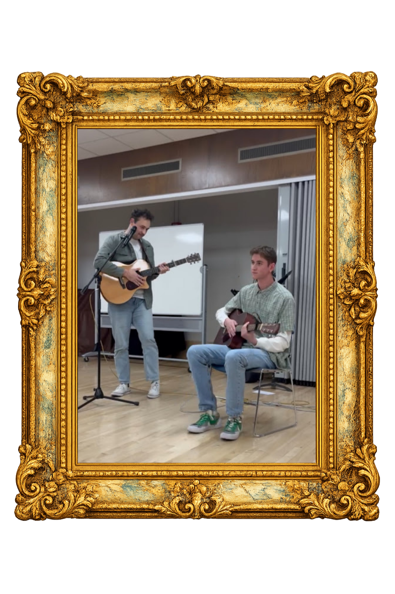
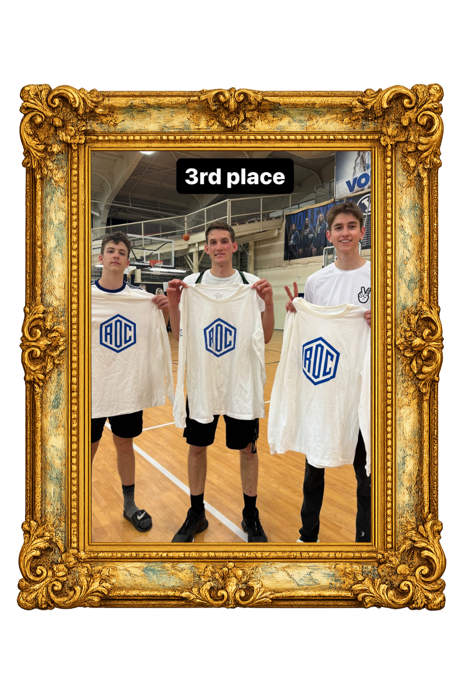
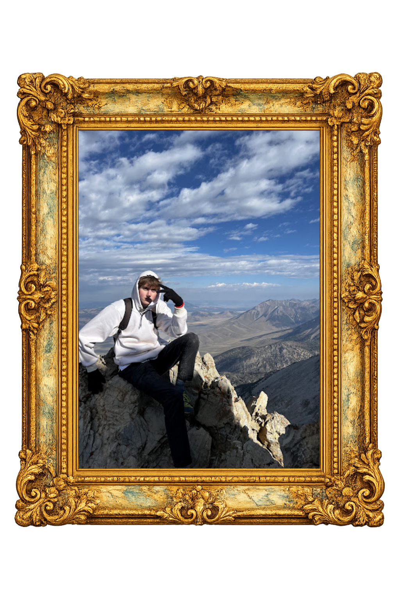

Resume
The formal record.
A quick view of the experience, education, and work history behind the gallery.
About the Artist
The Insight Loop
A museum-style map of how I turn a consumer problem into a strategy and then loop back to make sure the insight, evidence, and idea actually line up.
Problem → Instinct → Evidence → Insight → Idea
I often start with a gut creative direction, then work backward through research and forward again through strategy. The loop-back moments are where I test whether the idea is actually earned.
-
01
Problem
-
02
Gut Reaction
-
03
Imagined Execution
-
04
Loop back: what would need to be true?
-
05
Research
-
06
Themes
-
07
Evidence Check
-
08
Insight
-
09
Loop back: does the idea still hold?
-
10
Strategy → Creative Starters
I’m Bryce Peterson, an advertising strategist interested in the gap between what people say, what they feel, and what culture makes hard to admit. I like finding the tension inside a problem and turning it into a clear direction a creative team can build from.
Philosophy
I believe strategy is strongest when instinct and evidence are allowed to challenge each other. The first idea matters because it reveals a direction, but the research decides whether that direction has a real human reason to exist.
Vision
I want to make work that is useful before it is flashy: work that gives brands a sharper role in people’s lives, gives creatives a stronger springboard, and makes the final idea feel inevitable once you see the thinking behind it.
Personal Taste Archive
Throwing a Fit
The only thing better than a new sweater, is a thrifted one.


Beyond the Brief
Hobbies, side projects, and the other rooms I keep wandering into
A few quieter obsessions that keep feeding the work from the side.

Music
Songs, sounds, and the little performances that keep ideas moving.

Basketball
Competition keeps me honest about repetition, adjustment, and what improvement actually demands.

Adventuring
Getting outside, wandering somewhere new, and collecting better stories.